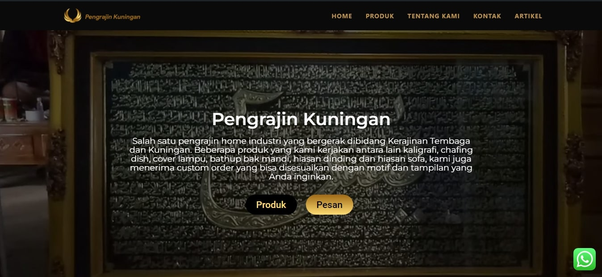
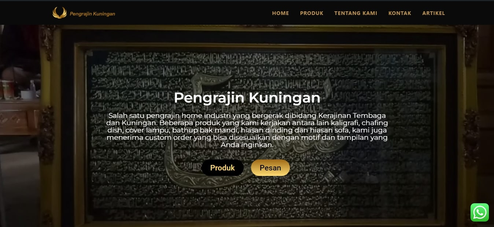
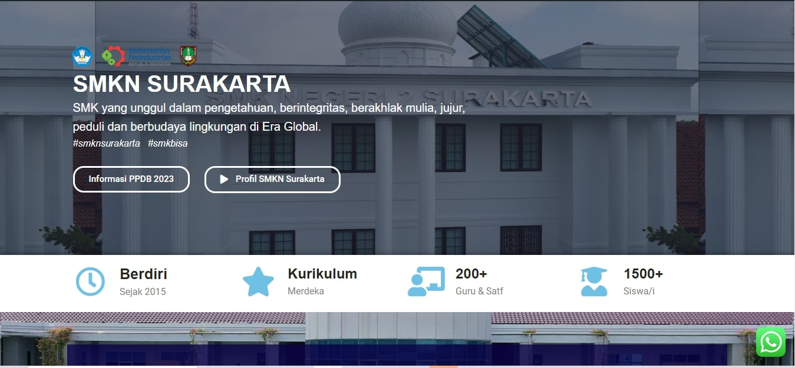
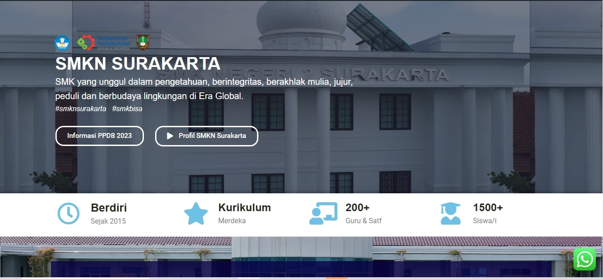
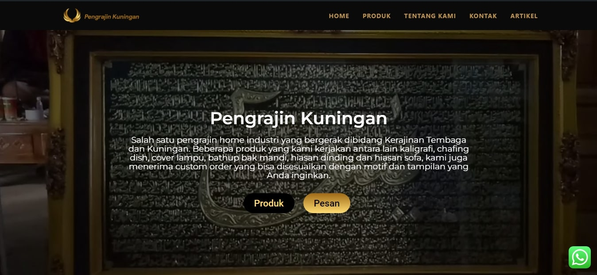
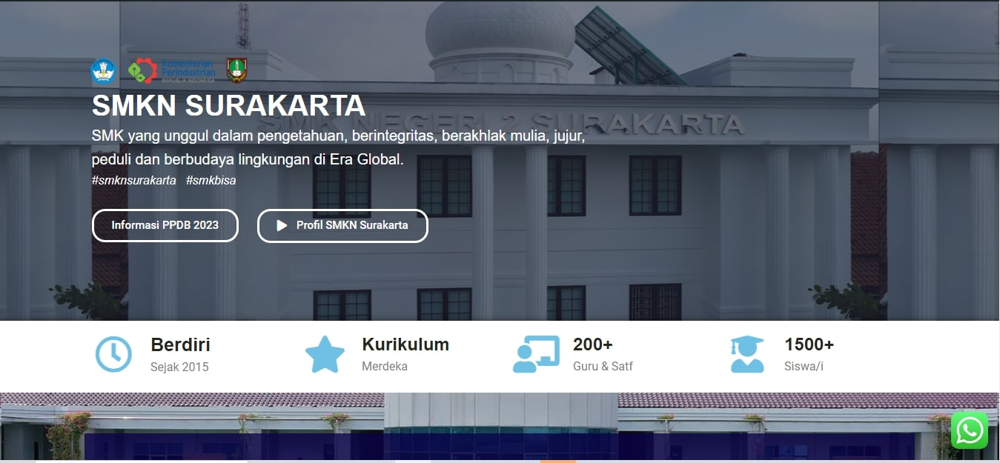

Portofolio
.jpg) 

.jpg) 

AND THIS IS MY RESUME


TK swasta yang dahulu terletak di daerah Krajan. Taman Kanak-kanak ini dipimpin oleh kepala sekolah yang bernama Ibu Rina. Dengan penuh semangat guru disini mendidik anak-anak supaya mampu menghadapi jenjang berikutnya
SD negeri ini mengawali perjalanannya pada tahun 1910. Pada saat ini SD N Mojosongo 5 mengimplementasikan panduan kurikulum SD 2013. SD N Mojosongo 5 dipimpin oleh seorang kepala sekolah yang bernama Kartini Asri Sejati.
SMP Negeri 2 Jaten pada tahun 2016 masuk juara 1 Adiwiyata tingkat Kabupaten. Pada tahun 2019 SMP Negeri 2 Jaten lolos juara 1 Adiwiyata tingkat Provinsi. Tahun 2021 SMP Negeri 2 Jaten masuk nominasi menjadi sekolah Adiwiyata tingkat Nasional.
Sekolah Menengah Kejuruan Negeri 2 Surakarta, atau dulu dikenal dengan nama STM 1 Solo (STEMONESKA) adalah Sekolah Menengah Kejuruan yang terdapat di Kota Surakarta, Jawa Tengah yang berada di Jalan Adi Sucipto No. 33, Manahan, Surakarta
Saat ini saya bersekolah di SMK Negeri 2 Surakarta dan berada di kelas 12 jurusan Rekayasa Perangkat Lunak. Alamat saya berada di Plesungan, Gondangrejo.
Saya memiliki beberapa hobi yang saya nikmati di luar jam pelajaran. Salah satunya adalah futsal, di mana saya suka bermain dengan teman-teman saya untuk menjaga diri tetap aktif dan sehat. Selain itu, saya juga sangat tertarik dalam bermain game, yang tidak hanya menghibur tetapi juga memungkinkan saya untuk memahami dunia teknologi lebih dalam.
Kemampuan utama saya adalah dalam pengembangan web. Saya memiliki pengetahuan dan keterampilan yang diperlukan untuk membuat dan merancang situs web yang menarik dan fungsional. Saya juga siap untuk bekerja sama dengan Anda untuk membantu menyelesaikan proyek apa pun yang Anda miliki. Jadi, jika Anda memiliki proyek yang memerlukan bantuan dalam pengembangan web atau bidang lainnya, jangan ragu untuk menghubungi saya. Saya sangat antusias untuk berkolaborasi dan memberikan kontribusi yang berarti. Tunggu apa lagi? Mari kita mulai!